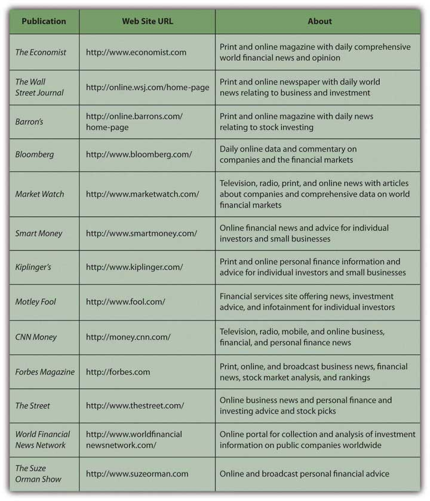

Investment information seems to be everywhere: in print, radio, television, and Internet—24/7 and global. Successful investors are hailed as gurus and high-profile financial news reporters become celebrities. No shortage of commentators and pundits will analyze every morsel of news, but how can you find useful investment information to make investment decisions? Even more important, how can you find useful information that you can trust based on the reliability of its source?
Your investment decisions involve asset allocation and security selection. To make those decisions, you need information that will help you form an idea of the economy, industry, and company that affect your decisions. The three main kinds of information that investors use are economic indicators, market indexes, and company performance.
To gauge the economic environment or cycle, the most widely used measures are the following:
The U.S. government tracks GDP, inflation, and unemployment through its agencies, such as the Federal Reserve Bank, the Bureau of Labor Statistics, and the National Bureau of Economic Research. Globally, the World Bank tracks similar statistics, which are widely reported in the media as recognized benchmarksA standard, often an index of securities, representing an industry or asset class and used as an indicator of growth potential or as a basis of comparison for similar of disparate industries or assets. of a nation’s economic health.
In addition, interest rates are another financial market indicator. Interest rates are tracked intently because so much capital investment, consumer investment (for houses, cars, education), and even daily consumption relies on debt financing. The prime rate, the lowest available retail interest rate, and average mortgage rates are the most commonly followed rates.
Economists look at many other factors to measure the economy. The index of leading economic indicatorsA set of ten economic statistics that are used to assess the potential for economic growth., published monthly, includes the following:
All these measures indicate how productive the economy is, how successful it is at creating jobs and incomes, and how much benefit it can create for consumers. A decline in the leading indicators for three consecutive months is thought to be a strong sign that the economy is in a downturn or even heading toward a recession.
The health of financial markets is gauged by the values of various securities indexes that show the growth or decline of prices in various markets. The indexes are used to gauge the movement, direction, and rate of change as well as nominal value.
Figure 14.2 "Examples of Security Indexes" lists some examples of the many stock indexes and bond indexes and the publicly traded securities they track.
Figure 14.2 Examples of Security Indexes

There is an index for anything that is traded: commodities, currencies, interest rate futures, and so on. Measures of market momentum include statistics such as the percentage of stocks that advanced (increased in value) or declined (decreased in value) or the volume of shares bought and sold. If more stocks advanced than declined, for example, that may suggest optimism for the stock market.
When interpreting index information, be aware of the investments an index represents. For example, the Dow Jones Industrial Average, or “the Dow,” consists of the equity values of only thirty companies of the more than five thousand publicly traded companies. The Dow is quoted widely and regularly. It was started in 1896 by Charles Dow, founder of Dow Jones, Inc., and the Wall Street Journal.
Figure 14.3 The Dow Jones Home Page

Some companies specialize in analyzing asset classes of particular securities. Two well-known analysts of mutual fund performance are Morningstar (http://www.morningstar.com), which is geared toward investors, and Lipper Reports (http://www.lipper.com), which is geared toward investment managers.
Indexes are used as benchmarks for an asset class or a sector of the economy. The Standard & Poor’s (S&P) 500 Index is used to benchmark the performance of large company (large cap) stocks, for example, while the Dow Jones Transportation Index is used to compare the performance of the transportation industry to that of other industries.
An industry’s media is another place to research how an industry is doing. Most industries have online trade journals and magazines that can give you an idea of industry activity, optimism, and overall health. Another source are companies that specialize in research and analysis of industry and company data, such as Hoover’s (http://www.hoovers.com) or Value Line (http://www.valueline.com).
When professionals analyze a company for its investment potential, they look first at financial statements. You can access this data as well, because all publicly traded corporations must file both annual and quarterly financial reports with the U.S. Securities and Exchange Commission (SEC). Those files are then made available on the SEC’s Web site (http://www.sec.gov/edgar) through Electronic Data Gathering and Retrieval (EDGAR), the SEC’s data bank. The annual reports (10-Ks) are audited, and the quarterly reports (10-Qs) are unaudited, but both have to show the company’s financial statements and report on important developments and plans or explain unusual financial results.
The 10-K and the 10-Q can give you a good sense of what and how the company has been doing or planning for the future. Similar corporate information may be found in the company’s annual report, sent to shareholders and also available on the company’s Web site.
An annual report is a narrative of how the company is doing. It includes financial statements, dated at least two years back so that you can see the company’s progress. It also includes a discussion, presented by the company’s management, of the company’s strategic plans, competitive environment, industry outlook, particular risk exposures, and so on. You can get a good sense of how well positioned the company is going forward from an annual report or 10-K.
Investment information is readily available. Accessing that information is easy, but evaluating its reliability may be difficult, along with knowing how to use it. It is important to distinguish between objective news and subjective commentary. A reporter should be providing unbiased information, while a commentator is providing a subjective analysis of it. A news article ideally conveys objective facts, while an editorial or opinion provides subjective commentary. Both kinds of “news” appear in all kinds of media, such as print, radio, television, and the Internet. Most print publications have continually updated Web sites, some with streaming video, and there are financial social networks and blogs providing online discussion and observation.
As you explore the sources of financial news, you will develop a sense of which ones are the most useful to you. Figure 14.4 "Sample of Financial News Sources" lists a selection of financial news sites to explore.
Figure 14.4 Sample of Financial News Sources
As you survey these news sources, be aware of features that might lead you to trust an online source of information. The following are some questions to help you evaluate the credibility of a Web site:Dax R. Norman, “Web Sites You Can Trust,” American Libraries (August 2006): 36. Also see the Librarians’ Internet Index of Web Sites You Can Trust, http://lii.org/ (accessed June 2, 2009).
The more questions you can answer in the affirmative, the higher the credibility of the Web site and the more you can trust it as a source of information. The same questions can be extended to evaluate the reliability of specific online financial news sources.